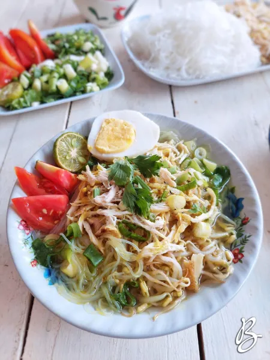

Soto Ayam

Bahan-Bahan
- Ayam - 500 gram
- Air - 2 liter
- Serai, geprek - 2 batang
- Daun jeruk - 4 lembar
- Daun salam - 2 lembar
- Garam - secukupnya
- Gula pasir - secukupnya
- Kaldu bubuk - secukupnya
- Minyak goreng - secukupnya
- Bumbu halus :
- Bawang merah - 5 siung
- Bawang putih - 5 siung
- Kemiri - 1/2 sdt
- Kunyit - 2 cm
- Pelengkap
- Soun, seduh air panas, tiriskan - 100 gram
- Taoge, rebus - 150 gram
- Telur ayam - 2 butir
- Daun bawang dan seledri, iris - 1 batang
- Tomat, iris - 1 buah
- Bawang goreng - secukupnya
- Jeruk nipis - secukupnya
- Sambal soto - secukupnya
Langkah-langkah
- Rebus ayam dalam panci berisi air di atas api kecil, buang airnya. Rebus kembali daging ayam sampai mendidih dan buang busanya.
- Panaskan minyak goreng di wajan, tumis bumbu] halus bersama daun salam, daun jeruk, serai geprek, dan jahe geprek. Tumis sampai harum dan matang.
- Masukkan tumisan bumbu ke dalam panci rebusan ayam. Masak sampai ayam empuk.
- Bumbui dengan garam, gula, dan kaldu bubuk secukupnya. Koreksi rasa.
- Tata nasi di dalam mangkuk, beri bahan pelengkap dan ayam suwir di atasnya. Siram dengan kuah soto panas.
- Soto ayam siap untuk dinikmati.
Catatan
Supaya kuah kaldu soto tidak keruh dan berbau amis, jangan lewatkan proses merebus ayam sebanyak 2 kali dan pastikan untuk membuang air rebusan pertama.
Kembali ke atas
Menu lainnya